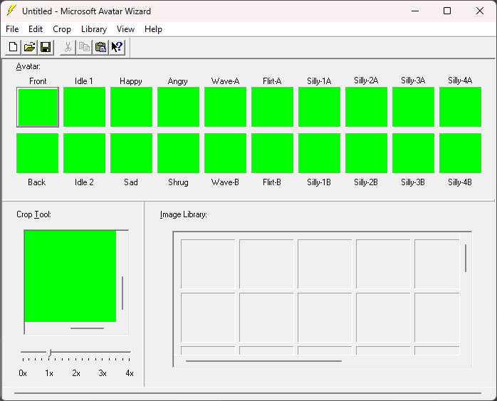

How to create an avatar and host it online
You will need to Install Microsoft V-Chat Suite if you haven't already.
There are three main areas that make up the Avatar Wizard, those are the Avatar, Crop Tool, and Image Library.
|
|
|
|
FRAME /BACKGROUND AVATAR |
STAND UP AVATAR |

NOTE: When you create an avatar from scratch, you can use images of these file types: *.bmp, *.eps, *gif, *.jpg, *.jif, *.pcd, *.pct, *.png, *.psd, *.tga, *.tif, or *.wmf.- To load an avatar click File, click Open... Locate the avatar in .png format and click open.
Avatar Wizard uses a pure green (RGB 0, 255, 0) background for avatars to be displayed on because this color becomes transparent in V-Chat.
Avatar: This is the area you will be dragging (or cutting and pasting) finalized images to, representing all the different functions of the avatar. (20 images in total at 128x128 each)
To add an image, drag and drop an image to the Avatar area from either the Crop Tool or Image Library (they must be 128x128).
NOTE: You can drag images between panes of Avatar Wizard.
2ndNOTE: When you drag an image to a pane that already has an image in it, the new image replaces the old one.
To remove an image from the Avatar area, right-click the image you want to remove and click cut.
-
- Front: Forward facing slot. (not animated)
- Back: Backwards facing slot. (not animated)
- Idle 1+2: This animation plays occasionally.
- 1: The first half of the Idle animation.
- 2: The second half of the Idle animation.
- Happy: Animation plays when you click the Smile button.
- Sad: Animation plays when you click the Sad button.
- Angry: Animation plays when you click the Angry button.
- Shrug: Animation plays when you click the Shrug button.
- Wave A+B: Animation plays when you click the wave button.
- A: This is the first half of the Wave animation.
- B: This is the second half of the Wave animation.
- Flirt A+B: Animation plays when you click the Flirt button.
- A: This is the first half of the Flirt animation.
- B: This is the second half of the Flirt animation.
- Silly 1 A+B: Animation plays when you click the Silly button. (randomly)
- A: This is the first half of the Silly 1 animation.
- B: This is the second half of the Silly 1 animation.
- Silly 2 A+B: Animation plays when you click the Silly button. (randomly)
- A: This is the first half of the Silly 2 animation.
- B: This is the second half of the Silly 2 animation.
- Silly 3 A+B: Animation plays when you click the Silly button. (randomly)
- A: This is the first half of the Silly 3 animation.
- B: This is the second half of the Silly 3 animation.
- Silly 4 A+B: Animation plays when you click the Silly button. (randomly)
- A: This is the first half of the Silly 4 animation.
- B: This is the second half of the Silly 4 animation.
NOTE: The Crop Tool has four different options.
-
- Flip: To flip an image, right-click and use Flip Vertical or Flip Horizontal
- Vertical Flips the image vertically.
- Horizontal Flips the image Horizontally.
- Invert colors: To invert the colors of an image right-click and use Invert Colors.
NOTE: The green background color of your image has been inverted also, and will be displayed as a pink square behind your avatar. This will show up in V-Chat as a pink background so you will need to change it back to green. - Inverts the colors of the image.
- Mosaic: To blur an image, right-click and hover your mouse on Mosaic, then choose an option: 2 Pixel blurs the image slightly, 5 Pixel blurs the image greatly.
- 2,3,4,5 Pixel Blurs the image in gradiations.
- Magnify: To magnify an image, use the slider below the image to decrease or increase the magnification. Dragging the slider to the left makes the image smaller; dragging the slider to the right makes it larger.
- 0x,1x,2x,3x,4x Increases or decreases the magnification of the image
- Image Library: The Image Library is where you store images (64 maximum).
-
NOTE: All the images when loaded are displayed in the available panes in the Image Library. The images stay in the Image Library until you remove them, even between sessions of the Avatar Wizard.
- To load a private avatar On the Library menu, click Load Avatar. Click the Files of Type drop-down arrow, and then click Private Avatars. Locate and click the private avatar you want to use, and then click Open. Type the password for this private avatar, and then click OK. The images that make up the avatar are placed in the available panes in the Image Library.
- To add an image to the Image Library, right-click and use Load Image... Locate and select the image you want to use, and then click Open.
- To add several images from the same folder right-click and use Load Directory of Images... Locate and click the folder that contains the images you want, and then click OK.
- To load an avatar into the Image Library right-click and use Load Avatar... Locate and click the avatar you want to use, and then click Open.
- To remove an image from the Image Library right-click that image use Cut
- To remove all images from the Image Library right-click and use Clear
- Previewing an avatar: After you’ve finished creating your avatar, you can preview how your avatar will appear to others in V-Chat by using the Preview Window. Do this before uploading your avatar to make sure the gestures are appropriate. You can leave the Preview Window open while you work in the Avatar area, and then preview your avatar as you work.
- To preview your avatar click on the View menu and click on Preview Window. Your avatar is initially displayed in the Front, Idle 1, or Idle 2 positions. Although the background appears white, it will be transparent in V-Chat.
- Click the different gesture buttons to see how they look, or you can close the window.
- Exporting an avatar as a private avatar: If you want to make sure that others cannot use your avatar, consider making it a private avatar by protecting it with a password.
-
NOTE: Avatar passwords are case-sensitive. Type your password carefully, and then remember it.
- To export an avatar as a private avatar click File menu, click Export. In the File Name box, type a name for your avatar, choose a folder to export the avatar to, and then click Save. Type a password for your private avatar, and then click OK.
When you are done, On the File menu, click Save. In the File Name box, type a name for your avatar, choose a folder to save the avatar to, and then click Save. Now you can upload that avatar online somewhere and download it in V-Chat. See Getting Started and scroll down.